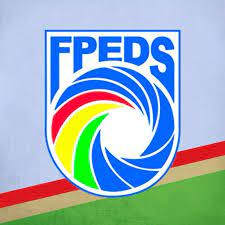

OBJETIVO:
Busco mais experiências desafiadoras na área em que obtenho conhecimento, fazer parte desta empresa e poder ter oportunidades para desenvolver minhas habilidades e aprimorar minhas capacidades dentro da área de tecnologia e da engenharia e contribuir para o crescimento da organização e sucesso da mesma.
EXPERIÊNCIA:

- Diretor Administrativo - Voluntário
- FPEDS - Federação Pernambucana Desportiva de Surdos
- DEZ/2022 - ATUAL
- ATIVIDADES: Digitador de documentos, elaborar os relatórios anuais de trabalhos da Gestão e acompanhamentos de e-mail, de redes sociais e informações de Entidades de surdos filiadas no estado de PE e à CBDS (Confederação Brasileira de Desportos de Surdos).
- Analista de Projetos - Autônomo
- CASIMPER - Casimper Impermeabilizações
- SET/2021 - ATUAL
- ATIVIDADES: O levantamento de medidas adequadas das áreas internas e externas a ser impermeabilizadas nos projetos de obras com a utilização do AutoCAD (DWGs e PDFs), de acordo com às solicitações dos clientes para organizar a elaboração dos projetos de impermeabilizações e também de laudos técnicos necessários. Em home office.
- Estagiário de Engenharia Civil - Estágio
- UNICAP - Universidade Católica de Pernambuco
- AGO/2019 - NOV/2019
- ATIVIDADES: Auxiliador de planilhas orçamentárias e de cronogramas de obras, interpretei a leitura de projetos arquitetônicos, elaborei a medição de serviços executados e os relatórios diários de obras (RDO's), e acompanhamento a execução de obras em reforma dos blocos.